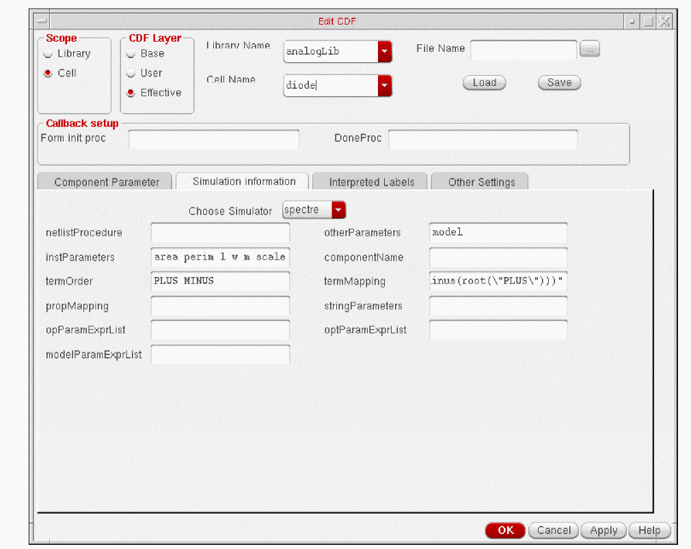

1
Introduction to Analog Library
This topic contains information about all the components in the Analog Library (analogLib). The analogLib library is a library within the Virtuoso Analog Design Environment. You can access the library from the following path:
<your_install_dir>/tools/dfII/etc/cdslib/artist/analogLib
Make sure you specify this path in the search path of the Set Library Search Path form.
The Analog Library (analogLib) is a library within the Virtuoso Analog Design Environment. The analogLib library contains basic analog components, such as resistors, capacitors and transistors that are used in building complex analog blocks, such as amplifiers.
This manual contains information about all the components in the Analog Library. The information presented in this manual is intended for integrated circuit designers and assumes that you are familiar with analog design and the following:
- The applications used to design and develop integrated circuits in the Virtuoso Studio design environment, notably Virtuoso Schematic Editor and Virtuoso Analog Design Environment.
- Component description format (CDF), which lets you create and describe your own components for use with Virtuoso Schematic Editor and Virtuoso Analog Design Environment.
The analogLib library contains basic components, such as resistor, capacitance, and transistor. These basic analog parts are used in building complex analog blocks, such as amplifiers.
The components in analogLib are divided into 10 categories, such as Actives, Analysis, Parasitics and so on. For each component in analogLib multiple views, such as the symbol view and simulator specific views are available. For some components, the schematic view might also be available.
Each component may be supported by different simulators, such as spectre or auCdl. The simulators supported in the Cadence Analog Design Environment are:
Licensing Requirements
For information on licensing in the Virtuoso Studio design environment, see Virtuoso Software Licensing and Configuration Guide.
Parameters in the Analog Library
This topic lists all the basic parameters that you specify at the time of adding a component to a design. The Add Instance form may not show all the parameters at once. Depending on what values you specify for some parameters, more fields may appear in the Add Instance form. You can display the complete list of parameters for each component using the Edit CDF form.
Following are the steps to display the parameters for a component using the Add Instance form as well as the Edit CDF form.
For these series of steps, you will create a library and cell.
-
Type
icms&in the xterm window.
The CIW (Cadence Information Window) appears. - Select File->Close to close all the What’s New windows.
- Select File->New->Library from CIW.
-
Type
testLibraryin the Name field and select the Don’t need process information radio button.
- Click OK.
- Select File->New->Cellview from CIW.
-
Select testLibrary in the Library Name field.
-
Type
testCellin the Cell Name field and schematic in the View Name field. - Select Schematic from the Type list box.
-
Select the application from the Open with Tool list box and click OK.
The new cell is opened in Virtuoso Schematic Editor. - Select Create ->Instance or click the Create Instance icon from the toolbar.
-
Click Browse from the Add Instance form.
- Make sure that the Show Categories check box is selected in Library Browser.
-
Select
analogLib,Actives, anddiodefrom the Library, Category, and Cell list boxes respectively.
The View list box displays a list of the simulators that support the selected component. Thesymbolview applies to all components.
-
Select symbol from the View list box and click Close.
Notice the outline of the diode component when you move your cursor in the Virtuoso Schematic Editing window. -
Click to place the component in the Virtuoso Schematic Editing window.
In the Add Instance form, notice that the library, cell, and view names appear in the Library, Cell, and View fields. The parameters for the selected component are also displayed.
These parameters are supported by the default simulators. To determine which simulators support which parameters, perform the following steps.
-
Select Options->Tool Filter from the Virtuoso Schematic Editing window. The Tool Filter form appears.
Notice that the default simulators are spectre, auCdl, and auLvs. -
Deselect all tools and select only
spectrefrom the Tool Filter form. -
Click Apply.
Notice that the list of parameters in the Add Instance form changes to display only those parameters that are applicable for Spectre for the diode component.
In this way, you can identify those parameters of an analogLib component that are supported by specific simulators.
To view and edit the complete list of parameters for a component, perform the following steps.
-
Select Tools->CDF->Edit from CIW.
The Edit CDF form appears. -
Click Browse and select the library and cell names.
The Edit CDF form displays the complete list of parameters for the selected component as shown below:
Click Simulation Information and select a simulator to view the list of parameters that the simulator supports. The fields appear blank for those simulators that do not support the selected component.

For more information on viewing and editing the CDF descriptions of a component, refer to the Component Description Format User Guide. For modifying the simulation information refer to Chapter 4, Component Description Format User Guide.
Note about this manual
Although, multiple simulators may be supporting each component in analogLib, the descriptions, syntax, and examples used in this book are specific to Spectre. Components supported primarily by hspiceD are listed in Appendix B.
Return to top